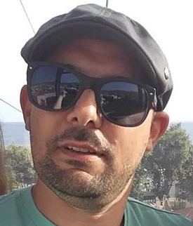

Roberto Fernandes

Summary
I am looking for new opportunities to enter a new career. I have always liked the area of technology, such as development or programming.
I'm currently working in sports management for a few years, so I think the time has come to embrace new projects and challenges.
Education
- Higher Technical Course - Information Systems Technologies and Programming - University of Madeira (2017 - 2019)
- IT Teaching (incomplete) - University of Madeira (2004 - 2009) -
- Chemistry (incomplete) - University of Madeira (1999 - 2004)
- High School - Escola Secundária Francisco Franco (1996 - 1999)
- Basic and Primary Education - Colégio Infante D. Henrique (1987 - 1996)
Work Experience
Skills
- Microsoft Office
- Excel
- Outlook
- Word
- Powerpoint
- Sport Event Organization
- Ability to make decisions and solve problems
- Using the Internet as a communication tool for investigation and research
- Facility of learning new software
Awards and Cerifications
- Prezi Certification - June 2015
- Social and Cultural Animator - 2002
Other